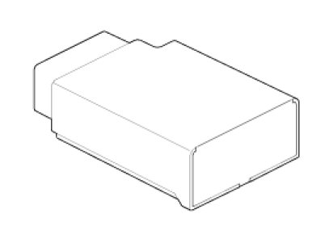

Tire Pressure Monitor Receiver / Transponder: Description and Operation
Description

1. Mode
(1) Virgin State
A. The receiver as a sole part is shipped in this state. Replacement parts should therefore arrive in this state.
B. In this state, there is no sensor monitoring and no DTC monitoring.
C. The state indicates that platform specific parameters must be written to the receiver and that sensors are un-learned.
(2) Normal State
A. In order for tire inflation state and DTC monitoring to occur, the receiver must be in this state.
B. In this state, automatic sensor learning is enabled.
(3) Test State
A. This state is only used in manufacturing plant to check RF transmission between sensor and receiver.
2. Overview
A. Receives RF data from sensor.
B. Uses sensor data to decide whether to turn on TREAD Lamp.
C. Learn TPM sensor for under inflation monitoring automatically.
D. Uses sensor information, distance travelled, background noise levels, Auto-learn status, short / open circuit output status, vehicle battery level, internal receiver states to determine if there is a system or a vehicle fault.
Operation
1. General Function
A. Auto-learn takes place only once per Ignition cycle.
B. On successful completion, 4 road wheel sensor ID's are latched into memory for monitoring.
C. Until Auto-learn completes, previously learned sensors are monitored for under inflation / leak warnings.
2. General Conditions to Learn New Sensors:
A. Receiver must determine that it is confident that sensor is not temporary:
1) Uses vehicle speed.
2) Uses confidence reduction of previously learned sensors.
B. Typical time at driving continuously over 12.4 mph(20 kph) to learn a new sensor is up to 20 minutes.
3. General Conditions to Un-Learn a sensor that is removed:
A. It takes less than 20 minutes at 12.4 - 18.6 mph(20 - 30kph).
B. Confidence reduction is dependent on time which vehicle is driven at speed greater than or equal to 12.4 mph(20 kph).